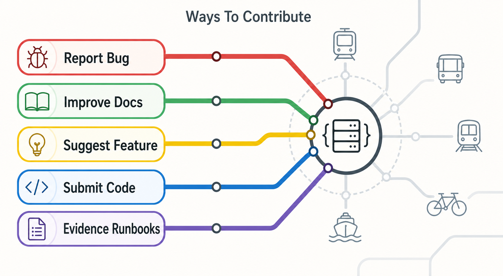

Make evaluator paths clearer
Improve quickstarts, UI tours, GTFS import guidance, connector docs, or troubleshooting notes.
Open-source paths
The most useful contributions improve local evaluation, tests, documentation, fixture coverage, connector examples, and release-candidate confidence.
Improve quickstarts, UI tours, GTFS import guidance, connector docs, or troubleshooting notes.
Focus on trip matching, stale telemetry, GTFS import, protobuf generation, adapter boundaries, and rollback cases.
Add synthetic connector examples and conformance fixtures without committing real credentials or private payloads.
